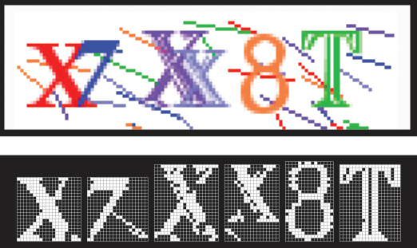

| 命令名称 | Incise_ColorLayered 颜色分层切割 |
| 命令功能 | 颜色分层字符切割（体验版--组合式） |
| 语法格式 | CharNum = TURING.Incise_ColorLayered(interval, num, Width, Height, Value, Row, Column) |
| 参数说明 |
interval：整数型，颜色值之间的距离 num：整数型，过滤掉点数的数量 Width：字符串型，可选，保留字符切割宽度范围（例："50-150"） Height：字符串型，可选，保留字符切割高度范围（例："30-100"） value：整数型，可选，点数阈值（默认6，范围：1~8） Row：整数型，可选，行间距（默认3） Column：整数型，可选，列间距（默认2） |
| 返回值 | CharNum：整数型，字符切割数量(最大下标值) |
| 按键精灵 |
复制代码
'截图大小不能超过4096像素的尺寸(100 * 40)
Call TURING.Pixel_FromScreen(0,0,100,40)
'色调分离处理
Call TURING.Filter_Posterization(6)
'显示获取的图像
Call TURING.Pixel_Preview()
'颜色分层切割字符
数量 = TURING.Incise_ColorLayered(15,15)
For i = 0 To 数量
'字符预览
Call TURING.Incise_Preview(i)
Next
|
| 切割效果 |  |